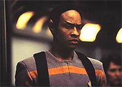
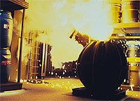
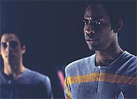
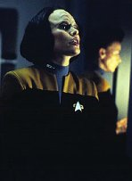

|
MANCHETE
DO EPISDIO
ltimo
episdio da temporada no passa
de um grande acidente de percurso
Episdio
anterior | Prximo
episdio
Sinopse:
Data Estelar: 48846.5.
Quando um engenheiro Maquis
chamado Dalby interrompe a fora para a grade de energia da nave ao
fazer um reparo no autorizado, Janeway percebe que no pode
esperar comportamento da Frota Estelar de pessoas que nunca foram
Academia. Para atualizar os oficiais Maquis com os protocolos da
Frota, a capit pede a Tuvok que treine um grupo de quatro
recrutas, incluindo Dalby. Como j era previsto, esses quatro
Maquis se recusam a seguir as regras de Tuvok at que Chakotay
mostre de forma convincente que isso no um exerccio
voluntrio.
 Como
um bom sargento de instruo, Tuvok pega pesado com os Maquis,
ordenando trajes e comportamento dentro das regras. Dalby reclama
com Torres sobre as tticas severas de Tuvok, mas ela sugere que
ele est com medo de no conseguir passar no treinamento do
Vulcano. A conversa bruscamente interrompida quando um dos
pacotes de gel bio-neural da nave deixa de funcionar, o segundo em
poucos dias. Torres leva o pacote para a Enfermaria e o Doutor nota
que o componente parcialmente biolgico tem uma infeco e
precisa ser "tratado" antes que o mal se espalhe pelos
outros sistemas da nave.
As sesses de treinamento rigoroso
de Tuvok parecem funcionar em nvel superficial, mas os Maquis so
facilmente desencorajados. Tuvok confessa a Neelix que no entende
por que suas tcnicas, aprimoradas durante anos de instruo na
Academia, no esto funcionando. O Talaxiano sugere que Tuvok seja
mais flexvel na sua abordagem.
 Enquanto
pondera sobre o conselho de Neelix no refeitrio, Tuvok indaga se
esporos bacterianos de um queijo caseiro que o Talaxiano est
fazendo esto sendo absorvidos pelos dutos de ventilao da nave,
servindo de fonte para a infeco dos pacotes de gel. O Doutor
inspeciona o queijo e o palpite de Tuvok se confirma.
Pouco tempo depois, Tuvok e
seus alunos se encontram presos na baa de cargas da nave quando
outro sistema cai, vtima da infeco. Quando a tripulao da
Voyager aquece os pacotes de gel com o calor produzido pelo reator
de dobra para provocar uma "febre", vapores txicos vazam
na baa de cargas onde Tuvok e os recrutas esto presos. Quase
subjugado pela fumaa, Tuvok ajuda trs dos quatro cadetes a
escapar, depois volta para o quarto aluno que ficou para trs
incapacitado. Quando o gs o derruba, as trs ovelhas negras se
juntam para resgatar os dois colegas. Por fim, Dalby percebe que se
Tuvok pode quebrar os regulamentos s vezes, talvez eles tambm
possam aprender os protocolos sob a sua tutela.
Comentrios:
"Learning Curve" um episdio pattico,
seja qual for o ngulo que se olha para ele. Os personagens esto
descaracterizados, a problemtica maquis totalmente artificial e
a "falsa-encrenca" causa pelo queijo de Neelix est mais
para uma comdia pastelo do que para uma srie de fico cientfica.
 A
tentativa foi trabalhar com a problemtica maquis e a dificuldade
de adaptao aos regulamentos da Frota. O objetivo nobre, no
fosse pelo fato de ter sido esquecido em quase todos os outros episdios.
Alm do mais, mesmo um maquis avisaria que faria um reparo antes de
desativar um componente da nave. Isso no tem nada a ver com
protocolos especficos, s uma questo de bom senso.
O comportamento de Chakotay incompreensvel. Nem parece que
aqueles maquis so a sua tripulao. Ele no manifesta nenhum
desejo de tornar mais fcil a adaptao de seus colegas, nem
hesita em esmurrar um tripulante para convenc-lo a se enquadrar.
Nem parece o Chakotay que foi pedir a Janeway para aceitar B'Elanna
Torres como engenheira-chefe.
O treinamento elaborado por Tuvok
tambm d uma viso bem pouco agradvel do que imaginamos para a
Academia --se voc achava que a Frota Estelar era uma organizao
voltada principalmente para a explorao do cosmos, esquea. s
mais uma verso do servio militar atual.
A atitude do oficial de segurana como um general ridcula. O
exerccio de corrida pior ainda. Por que no usar um holodeck
para criar um ginsio ou mesmo um ambiente de maratona, em vez de
ficar passeando pelos tubos Jefferies?
 Se
isso estivesse acontecendo na Enterprise de Jean-Luc Picard, os
problemas teriam sido todos resolvidos sem abuso de autoridade ou
maneirismos militares. Apesar da necessidade de disciplina, certo
que at o sculo 24 haver mtodos bem mais eficazes e agradveis
de criar senso de responsabilidade nos membros de uma equipe.
Infelizmente, Tuvok ainda no os conhece. Se
isso estivesse acontecendo na Enterprise de Jean-Luc Picard, os
problemas teriam sido todos resolvidos sem abuso de autoridade ou
maneirismos militares. Apesar da necessidade de disciplina, certo
que at o sculo 24 haver mtodos bem mais eficazes e agradveis
de criar senso de responsabilidade nos membros de uma equipe.
Infelizmente, Tuvok ainda no os conhece.
A histria do "queijo assassino" ento, nem se fale.
Tudo bem, podemos at engolir a idia de que surja uma bactria
(ou mesmo de um vrus que viva dentro dela) produzida a partir da
fermentao do queijo. Mas que isso seja capaz de desabilitar a
nave, a j demais.
Se h componentes sabidamente orgnicos na Voyager, tambm deve
haver esquemas eficientes de proteo. Seno, a cada resfriado de
um tripulante, seria necessrio trocar todo o equipamento.
Embora o conceito de "febre" seja usado de forma
totalmente equivocada, aquecer os circuitos seria um bom modo de
eliminar os parasitas --o problema que isso eliminaria a
"vida" dos circuitos bioneurais junto! como curar a
doena matando o paciente. Ou seja, tudo no passa de um monte de
tecnobaboseira escrita para manter Tuvok e os maquis em perigo na rea
de carga.
 Para
terminar a destruio, o dilogo final em que Dalby
"decide" aceitar os padres da Frota aps Tuvok ter
tentado salvar a vida de um dos maquis ridiculamente falso, s
para criar o clima de que tudo foi resolvido e nada sobrar para se
comentar no episdio seguinte. Mais artificial, impossvel.
A verdade que no h nada de bom para falar sobre esse episdio.
Para no dizer que tudo uma perda de tempo, o incio (nica
parte que mostra um sinal de continuidade na srie), em que Janeway
faz papel de governanta no holodeck, mostra o lado "famlia"
da capit.
De resto, trata-se de um grande acidente de percurso. E o percurso
comear a ficar ainda mais cheio de acidentes na prxima
temporada...
Citaes:
B'Elanna - "Get the
cheese to sickbay."
("Leve o queijo para a enfermaria.")
Trivia:
 Esse episdio foi escrito pela dupla
Ron Wilkerson e Jean Matthias. Os dois tambm escreveram o elogiado
episdio da ltima temporada da Nova Gerao, "Lower
Decks". Os dois episdios introduzem um novo quarteto de
jovens tripulantes que observam o alto escalo da nave (neste caso,
Tuvok) sob a tica de uma tripulante novato e comum.
Esse episdio foi escrito pela dupla
Ron Wilkerson e Jean Matthias. Os dois tambm escreveram o elogiado
episdio da ltima temporada da Nova Gerao, "Lower
Decks". Os dois episdios introduzem um novo quarteto de
jovens tripulantes que observam o alto escalo da nave (neste caso,
Tuvok) sob a tica de uma tripulante novato e comum.
Aps este episdio,
estava previsto que faltariam mais quatro episdios para completar
a temporada. Porm, a UPN resolveu deixar os quatro restantes para
a abertura da segunda temporada, esperando assim, como sairia na
frente das outras emissoras na volta das reprises, conseguir mais
audincia. Os episdios j filmados que foram atrasados so: "The
37's", "Elogium", "Twisted"
e "Projections", este ltimo com a presena do
personagem recorrente da Nova Gerao, tenente Reginald
Barclay (Dwight Schultz).
Ficha
tcnica:
Escrito por Ronald Wilkerson
& Jean Louise Matthias
Dirigido por David Livingston
Exibido em 22/05/1995
Produo: 016
Elenco:
Kate Mulgrew como
Kathryn Janeway
Robert Beltran como Chakotay
Roxann Biggs-Dawson como B'Elanna Torres
Robert Duncan McNeill como Tom Paris
Jennifer Lien como Kes
Ethan Phillips como Neelix
Robert Picardo como Doutor
Tim Russ como Tuvok
Garrett Wang como Harry Kim
Elenco convidado:
Armand Shultz como Dalby
Derek McGrath como Chell
Kenny Morrison como Geron
Catherine MacNeal como Henley
Thomas Alexander Dekker como Henry
Lindsey Haun como Beatrice
Episdio
anterior | Prximo
episdio
|